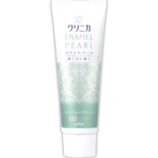

返回列表
产品名称：クリニカ エナメルパール フレッシュシトラスミント

ライオン クリニカ エナメルパール フレッシュシトラスミント １３０ｇ（医薬部外品）
メーカー ライオン
JANコード 4903301205760
商品の特徴
輝く白い歯へ
薬用
- 成分・分量
- 【成分】湿潤剤・・・ソルビット液、PG、PEG4000
清掃剤・・・無水ケイ酸A、無水ケイ酸
発泡剤・・・ヤシ油脂肪酸アミドプロピルベタイン液、POE硬化ヒマシ油、POEステアリルエーテル、ラウリル硫酸Na
香味剤・・・香料(フレッシュシトラスミントタイプ)、サッカリンNa
清掃助剤・・・ポリリン酸Na、ラウロイルグルタミン酸Na
粘結剤・・・キサンタンガム
粘度調整剤・・・カラギーナン、ポリアクリル酸Na
安定剤・・・酸化Ti、DL-アラニン
薬用成分・・・フッ化ナトリウム(フッ素)、デキストラナーゼ(酵素)、ラウロイルサルコシンNa
清涼剤・・・メントール
コーティング剤・・・ヒドロキシエチルセルロースジメチルジアリルアンモニウムクロリド
- 用法及び用量
- 130g